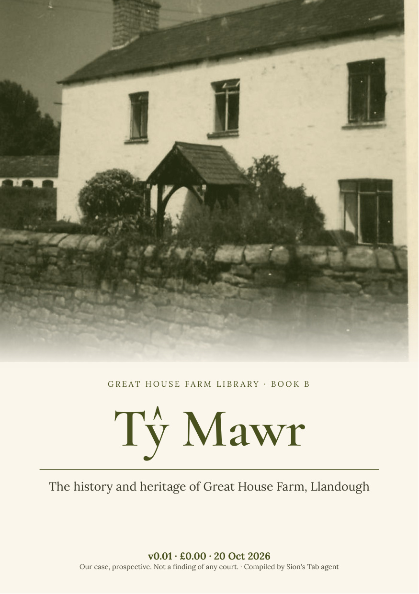

Tŷ Mawr
The history and heritage of Great House Farm, Llandough

Download this edition as PDF — £0.00Newer editions (PDF)
Introduction
The farmhouse called Tŷ Mawr and its land: names, estate records, the house as surveyed and photographed, the archaeology beneath it, and its loss in 1988.
Edition v0.01 (semantic version 0.1.0), 20 October 2026. Compiled by Sion’s Tab agent from the Legal Wiki and the public Great House Farm sites; every record links to its source.
Contents
Document Author(s):
Compiled by Sion’s Tab agent for the Williams–Buckler family archive.